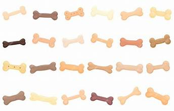

Cada granito de arena cuenta para su bienestar

Mantenemos a nuestros perritos alimentados y abrigados gracias a las aportaciones de la comunidad. Puedes donar costales de croquetas, platos, correas o cobijas en buen estado.
Coordinar una Entrega